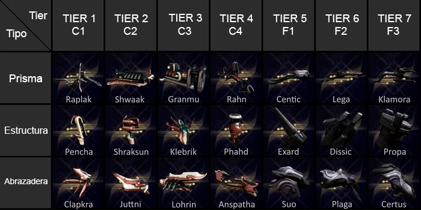

Los "Amp" son unas armas modulares utilizadas por el operador para canalizar la energía del vacío. Antes de obtener el Amp el operador tan solo utilizaba la energía del vacío redirigida a una única dirección, por medio de los Amps le permite moldear esta energía a gusto y mejorar en grandes creces el daño. Su modo de construcción es muy similar a la de los "Kitgun", otorgando modos de disparo únicos basados en el prisma que utilizaste para construir el arma.
Si quieres cazar eidolons y hacer que tu operador sea competente para luchar contra enemigos, necesitarás un buen amp. Al terminar la misión "La guerra interna" habla con Raquis Onkko en Cetus-Tierra, atrás de Konzu, hay una habitación que solo es accesible por el operador, luego hablarás con el mismo Onkko, el cual te dará un "Amp Mota" prefabricado, el "Amp Mota" es como el Rayo del Vacío, pero con más daño. También mas adelante se obtiene un segundo Amp prefabricado llamado "Sirocco" al completar la misión "La nueva guerra". Los siguientes Amps se obtienen mediante la fabricación de ciertas partes en la fundición y combinándolas en Onkko o Little Duck. Con Amps más potentes disponibles a medida que aumentes tu nivel con las facciones Raquis y Vox Solaris.
Habla con Raquis Onkko o Little Duck y dale a la opcion "Ensamblaje de amp" para comenzar a fabricar un amp. Hay tres partes necesarias para la creación de un amp:
• Prisma - Fuego primario
• Estructura - Fuego secundario
• Abrazadera - Bono de estadísticas
Hay siete "tiers" para cada parte del amp. Los primeros cuatro niveles se obtienen de Raquis Onkko en Cetus y los últimos tres se obtienen de Little Duck en Fortuna.
Cada tier se desbloquea y se referencian secuencialmente al nivel de reputación. Por ejemplo, el Prisma Raplak es el primer Prisma que podrá comprar de Raquis Onkko. Esto lo convierte en un prisma T1. La última estructura que vende Onkko, la estructura Phahd, es una estructura T4 ya que es la última estructura que desbloqueas de él. Las ofertas de Little Duck cubren los niveles 5-7, ya que la mayoría de los jugadores habrán nivelado Onkko antes que Vox Solari.
Una vez hayas creado tu primer amp, tendrás que utilizar a tu operador para nivelar ese amp, como si de un arma más se tratase. Una vez que un amp alcanza el rango 30, tendrás que templarlo yendo con Raquis Onkko o Little Duck hay que tener en cuenta que necesitaras estar en el rango tres con Raquis o Vox Solaris para templar un amp, una vez estés con uno de los dos hablas con ellos y le das a la opción "otros servicios", "templar" y te pedirá nombrarlo, este proceso de templado sirve para mejorar el daño potencial del amp. También hay que tener en cuenta que necesitaras estar en el rango tres con Raquis o Vox Solaris para templar un amp. El costo de templado serán 5,000 de reputación. Templar un amp restablece su nivel a cero, pero desbloquea la capacidad de equipar lentes de enfoque y arcanos en tu amp. También ganarás Puntos de Maestría por subir de nivel tu amp recién templado, esta maestría solo se aplica por prisma usado, ósea si ya hiciste un amp con cierto prisma y luego haces otro con el mismo prisma no te contara la reputación, solo lo hará si utilizas un prisma distinto.
La comunidad se refiere a los amps según el tier de las piezas utilizadas en su construcción. Por ejemplo, combinar Prisma Raplak, Estructura Shraksun y Abrazadera Lohrin le daría un nombre de Amp 1-2-3. Si en su lugar usaste un prisma T2, tu amp ahora se denominaría 2-2-3.
Cada número en esos tres representa al Prisma, la Estructura y la Abrazadera. El primer número es el Prisma, el segundo es la Estructura y el tercer número se refiere a su Abrazadera.
Esto puede parecer algo extraño de explicar, pero casi todos los jugadores de Warframe hablan de amps con combinaciones de números en lugar de partes. Si alguna vez escuchas a alguien decir que está usando un “1-2-3” o un “1-7-7”, se está refiriendo a una combinación de amps, en la cual existe una cantidad de 343 posibilidades de combinación de los amp.
| Partes | Modo de disparo | Estadisticas |
|---|---|---|
| Raplak | Rayo de un solo disparo |
|
| Shwaak | Proyectil similar a la Plasmor Arca |
|
| Granmu | Lanzagranadas de tres ráfagas |
|
| Rahn | Similar a la Raplak pero con disparo automatico |
|
| Cantic | Similar a la Raplak pero con disparo de rafagas |
|
| Lega | Disparo similar al lanzallamas Ignis |
|
| Klamora | Chorro de corto alcance y gran ángulo |
|
| Parte | Modo de disparo | Estadisticas |
|---|---|---|
| Pencha | Similar al rayo de la Opticor |
|
| Shraksun | Proyectil explosive similar a la Plasmor Arca |
|
| Klebrik | Rayo auto dirigido |
|
| Phald | Lanza discos de energia que rebotan |
|
| Exard | Granmu que dispara hasta que la municion se acabe |
|
| Dissic | Bomba de arco que detona con el impactoo |
|
| Propa | Mina flotante que explota tras un breve retraso |
|
| Parte | Estadisticas |
|---|---|
| Clapkra | +40 de energia del Amp |
| Juttni | -1s de retraso de la recarga Amp |
| Lohrin | +12% de probabilidad critica y estado al Amp |
| Anspatha | +20 de energia del Amp, +15/s tasa de recarga de energía |
| Suo | +100 de energia del Amp, +2s de retraso de la recarga Amp |
| Plaga | -20 de energia del Amp, -1.5s de retraso de la recarga Amp |
| Certus | +20% de probabilidad critica al Amp |
Las Amp que son las mas recomendadas para la caza de Eidolon u Orbe Robaganancias son las siguientes:
• 1-2-3: Esta es la primer Amp que probablemente quieras fabricarar para la caceria debido a que es la mas facil de conseguir por los materiales que se pueden obtener en Cetus.
• 1-7-7: Esta es la mejor Amp para la caceria de Eidolon debido a que con ella destruiras los escudos del eidolon de un disparo con Golpe del Vacio [Madurai].
• X-7-7: En esta combinacion puedes escoger del 1 al 7 el tipo de prisma que mas te guste.